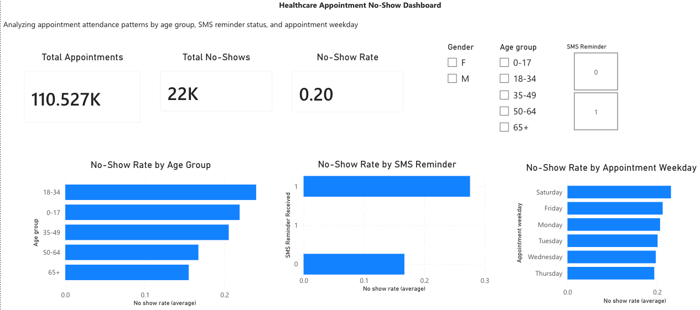

Clinical Research & Documentation
Research support, documentation, literature review, patient workflow exposure, medical terminology, and clinical team communication.
Recent Biology graduate with a Biomedical Engineering minor, undergraduate research experience, clinical shadowing exposure, and a portfolio focused on healthcare data, clinical workflows, quality improvement, and systems-based problem solving.
Prepared for entry-level roles supporting clinical research, lab operations, healthcare data quality, care coordination workflows, and systems-based process improvement.
Research support, documentation, literature review, patient workflow exposure, medical terminology, and clinical team communication.
SOP awareness, biosafety training, specimen workflow understanding, data accuracy, quality control mindset, and organized lab documentation.
Excel, Power BI, SQL concepts, dashboards, workflow mapping, user requirements, test cases, and EHR/EMR workflow concepts.

A healthcare data and workflow project using Excel and Power BI to analyze appointment attendance patterns and translate findings into clinical workflow recommendations, mock requirements, and test cases.